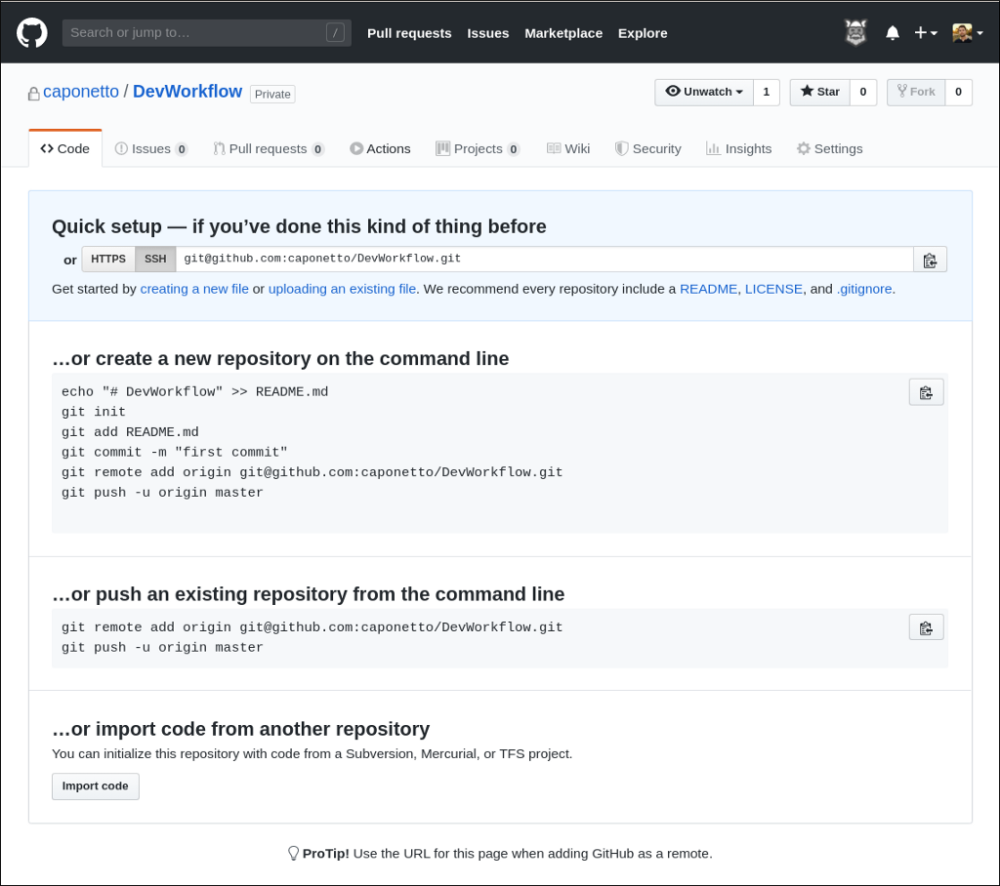
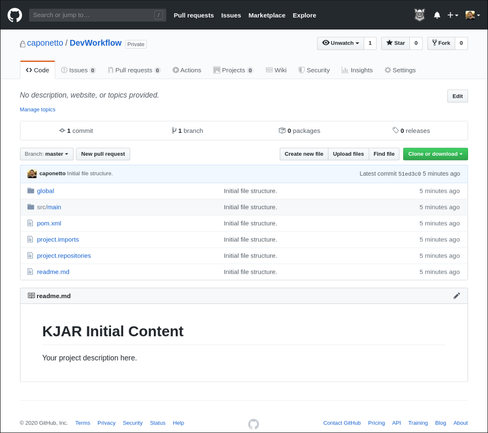
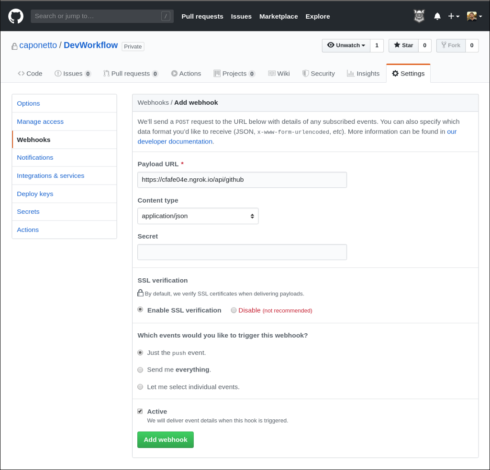
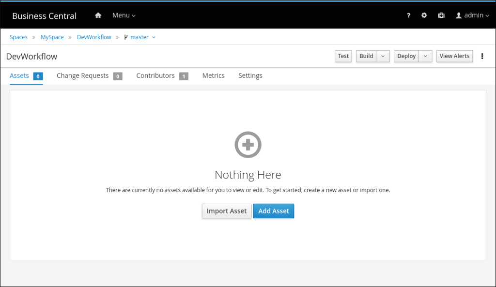
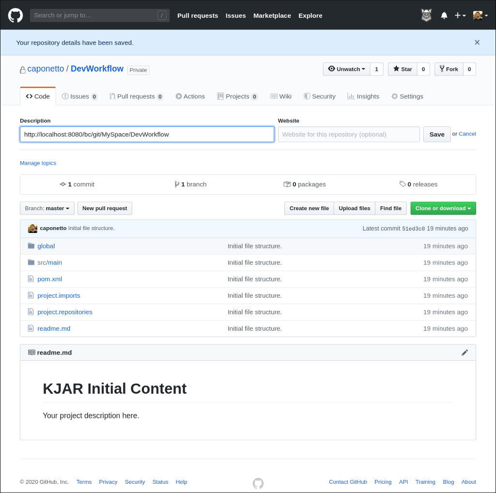
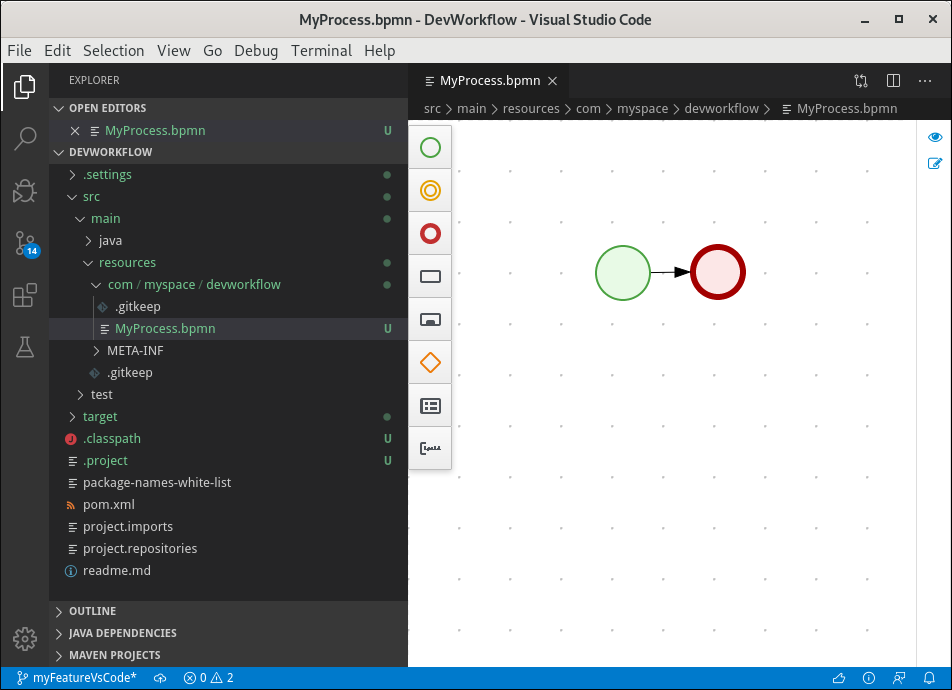
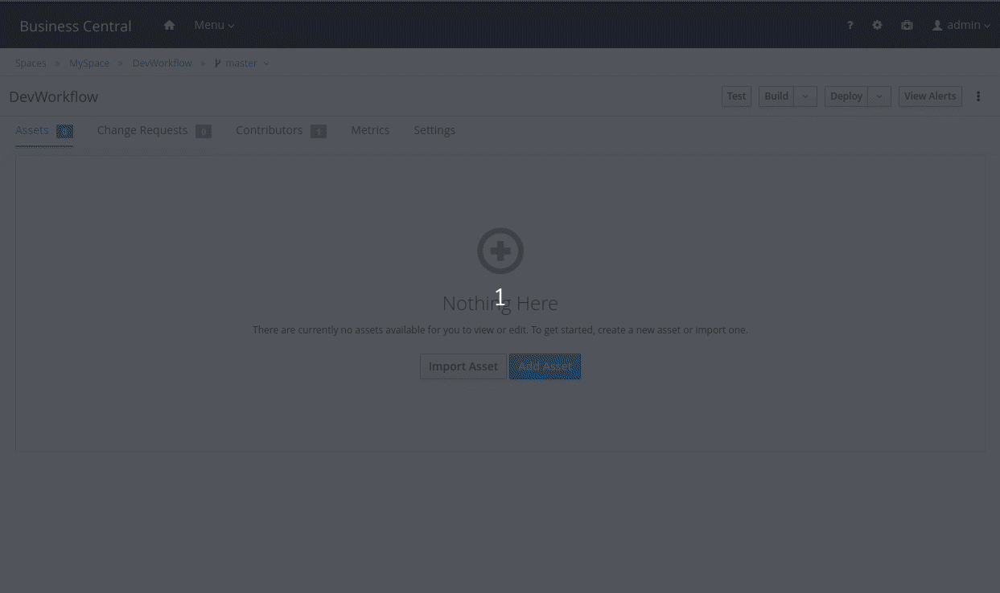
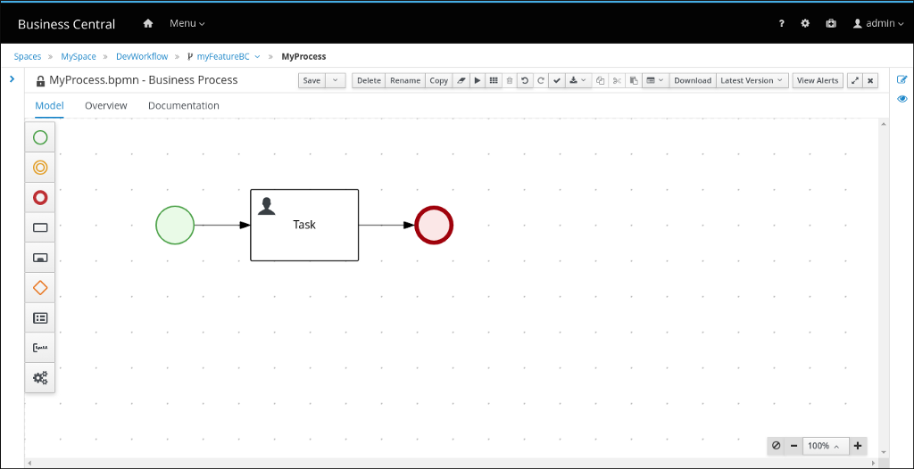
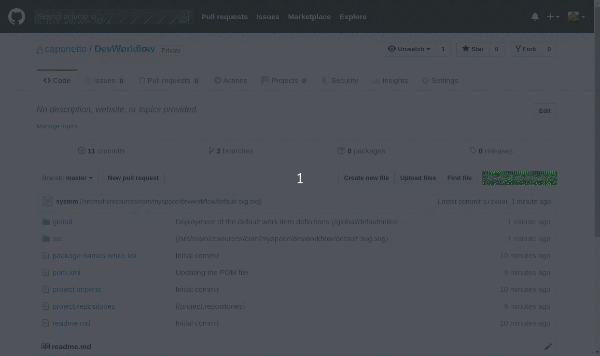

An improved development workflow on Business Central using our new DevTools
Learn how to use the KIE toolset while keeping everything synced. In this hands-on tutorial, you will design a business process using both Business Central and VS Code. You will also submit and merge change requests on both Business Central and GitHub, while everything is kept synced via an external sync service.

The world becomes more complex on a daily basis, and, consequently, problems become more complex at the same increase rate. Despite many challenges we may stumble upon as a developer, it is crucial to have a toolset within the reach of our hands that will improve productivity to the most.
Specifically talking about designing business processes and rules, one could rely on the power of the Business Central authoring environment, VS Code and GitHub extensions, not to mention our online editor.
If you want to learn more about Kogito tooling, I encourage you to check out the following blog posts:
It is up to you to pick the tool that improves your productivity. However, a question that pops up in mind is “How to keep everything synced?”. In other words, if a team member wants to develop on the VS Code and push the changes to GitHub, and others on Business Central, how can they interact with each other? How can a team keep their codebases synced?
Well, you have already learned in this post how to automatically push every change on Business Central to an external repository like GitHub via git hooks, but how to guarantee the other way around?
In this post, I will walk you through a complete development workflow from Business Central to our new DevTools. With a few tweaks, you will keep your codebases synced with each other without losing the flexibility to develop your solutions using the toolset that you and your team are already used to.
So let’s get started!
Step 1: Create the initial file structure
Suppose we want to start a new KIE project that needs to be available on both Business Central and GitHub repositories. Also, every commit done on one repository must be replicated on the other, i.e., we need to make a sync mechanism available so both repositories are always up-to-date.
Note: This tutorial is not limited to GitHub; you can also apply the same steps for GitLab and BitBucket.
Hence, we need to create an empty GitHub repository as the very first step, then populate it with the initial file structure of a KIE project. I’m naming this new GitHub repository as DevWorkflow.

One option for creating the initial file structure would be importing the empty GitHub repository into Business Central so a base project is automatically created for you, and, optionally pushed to GitHub via a post-commit git hook. You can learn more about this feature in this post. However, let’s do so using our beloved command line.
To start with, I will generate a base KIE project from a maven archetype.
$ mvn archetype:generate
-DarchetypeGroupId=org.kie
-DarchetypeArtifactId=kie-kjar-archetype
-DarchetypeVersion=7.35.0-SNAPSHOT
-DgroupId=com.myspace
-DartifactId=DevWorkflow
-Dversion=1.0.0
-BThen, I will create the directory that our business process will be placed.
$ cd DevWorkflow
$ mkdir -p src/main/resources/com/myspace/devworkflow
$ touch src/main/resources/com/myspace/devworkflow/.gitkeep
Finally, I will execute the following git commands to initialize the repository, add the remote origin URL, add all the files, commit, and push everything to GitHub, respectively.
$ git init
$ git remote add origin git@github.com:caponetto/DevWorkflow.git
$ git add .
$ git commit -am "Initial file structure."
$ git push -u origin master

Result of this step: A new GitHub repository populated with the initial file structure.
Step 2: Configure the webhook
GitHub offers a way of getting notified every time a change occurs through its webhooks. In this tutorial, I will provide a public URL of a REST service that will manage and replicate all pushes from GitHub to Business Central. This will guarantee that Business Central is kept synced with GitHub.
So what exactly is this public URL? Well, we’ve prepared a sync service code (more details ahead) that provides some REST endpoints. All you need to do is to deploy this code on a server that is publicly available so that GitHub can reach. Once the deploy is done, the following endpoints will be available:
POST /api/github
POST /api/gitlab
POST /api/bitbucket
For this tutorial and testing purposes, I won’t deploy the sync service in a server publicly visible to GitHub. Instead, I’m using ngrok (+docker), which basically provides a public URL for me, and every hit on that URL will automatically be forwarded to my local server. After starting ngrok up, I can go ahead and set up the webhook.
This is an example of what ngrok does:
Forwarding https://cfafe04e.ngrok.io -> http://localhost:9090
I will provide the following URL on the webhook configuration:
https://cfafe04e.ngrok.io/api/github
Thus, GitHub will hit this URL on every push, which will be redirected to my local server. Once the sync service is reached, an integration code inside this service is able to step in.
Note: Make sure to select application/json as Content type when configuring your webhook. The rest of the configuration options can be left untouched.
Result of this step: GitHub will send a POST request to the provided URL every time a push is done on the repository. At this point, the sync service hasn’t been started up yet.

Step 3: Prepare and startup Business Central
Before starting up Business Central, let’s prepare a post-commit file that will be run every time a commit is done on Business Central. Simply put, I will configure some properties, and build a java helper code that will be run once the post-commit is triggered. This code will then take care of pushing all changes from Business Central to GitHub, thus keeping them synced. Follow the instructions on this blog post to set this up.
After done the preparation, I will start-up Business Central providing the following property:
-Dorg.uberfire.nio.git.hooks=/dir/to/the/post/commit/file
It will guarantee that all new repositories get this hook file from the directory set in the property.
Note: The HTTP protocol is being used instead of SSH on the workflow described on this post.
Once all the files are stored on GitHub, I can go ahead and import this repository into Business Central, so both repositories are synced with an initial code structure.

Finally, I will copy the HTTP URL of my repository in Business Central (DevWorkflow → Settings → General Settings → URL) and set it as the description of the GitHub repository. This will create a bond between both repositories that will be used later by the sync service.

Result of this step: Business Central will execute the post-commit hook every time a commit is done on the repository, and therefore all changes will be automatically pushed to GitHub.
Step 4: Startup the sync service
As I’ve previously mentioned, we’ve prepared a sync service code available at this repository that will take care of syncing the Business Central repository when the GitHub repository gets changed.
The sync service provides REST endpoints that will be reached when the webhook that you’ve configured in Step 2 is triggered. Then, an integration code will take place by doing the following operations:
- Clone the repository from Business Central in a temporary directory. The Business Central repository will be the origin remote.
- Add the GitHub repository as external-origin remote.
- Pull content from both external-origin and origin.
- Push content to both external-origin and origin.
Follow the instruction on the repository to get this service running.
Note: At this point, we have set up a two-way sync between Business Central and GitHub, using git hooks and webhooks, respectively.
Result of this step: Assuming there is no conflict, every change on GitHub will be automatically pushed to the Business Central repository via the sync service.
Step 5: Create a business process on the VS Code
Suppose a developer wants to use the VS Code extension to work on a business process. To illustrate this step, I will create a feature branch on the project that we’ve created in Step 1.
$ git checkout -b myFeatureVsCode
On VS Code, create, edit and test your business process. For simplicity, I will create a simple business process with only a start and an end node at:
src/main/resources/com/myspace/devworkflow/MyProcess.bpmn
Note: Make sure the VS Code extension is installed. You can check the latest release here.
Result of this step: Developers can work on their business processes using the toolset they are used to, in this case, the VS Code.

Step 6: Push changes to GitHub
After designing my business process, I will commit and push the changes to GitHub using the following git commands:
$ git add src/main/resources/com/myspace/devworkflow/MyProcess.bpmn
$ git commit -am "Adding MyProcess."
$ git push origin myFeatureVsCode
Result of this step: The business process created on the feature branch will be pushed to GitHub.
Step 7: Submit and merge a pull request
Following a developer workflow, I will go ahead and submit a pull request on GitHub so that my work can be merged into the master branch. After the code is reviewed, I will merge the pull request.
In this case, the webhook will be triggered after the merge operation, and the sync service will take care of syncing both repositories. On Business Central, you should be able to see the business process that has been created from the VS Code.
Result of this step: After the merge operation on GitHub, the repository in Business Central will be synced with the latest update done on GitHub.

Step 8: Edit the business process on Business Central
Now suppose another developer wants to work on the business process that has been just merged from GitHub, but using the Business Central authoring environment. To illustrate this scenario, I will create a new feature branch on Business Central and edit the business process. For simplicity, I will only add a user task between the start and end nodes.
Result of this step: Developers can work on their business processes using the toolset they are used to, in this case, the Business Central authoring environment.

Step 9: Submit and merge a change request
Following a developer workflow, I will go ahead and submit a change request on Business Central so that my work can be merged into the master branch. After the code is reviewed, I will merge the change request.
In this case, the git hook will be triggered and all changes will be pushed back to GitHub.
Note: The change request feature is relatively new on Business Central, check out this and this blog posts for more information about it.
Result of this step: After the merge operation on Business Central, the repository in GitHub will be synced with the latest update done on Business Central.

…and this flow continues.
Final remarks
In this post, we have gone through a complete development workflow on Business Central with our new DevTools. We have also taken advantage of the power of git hooks and how to use them in our favor to keep synced two repositories from distinct locations. Finally, we have seen how our new DevTools (VSCode, Github Extension, and the online editor) can streamline the development workflow. In the end, productivity is what really matters.
And that’s all for today. Thanks for reading! 😃
An improved development workflow on Business Central using our new DevTools was originally published in kie-tooling on Medium, where people are continuing the conversation by highlighting and responding to this story.